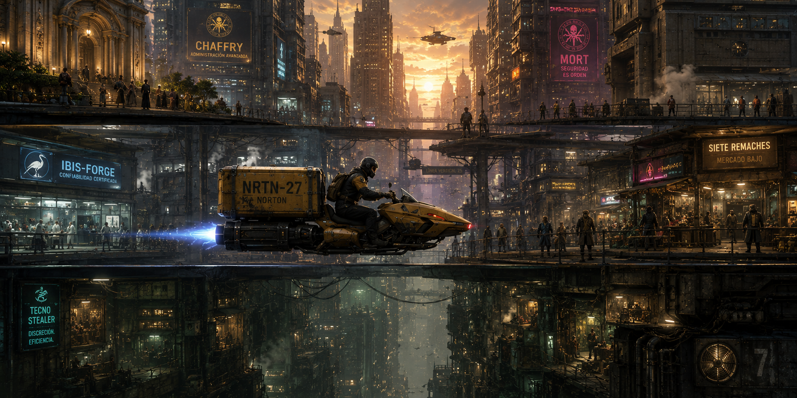
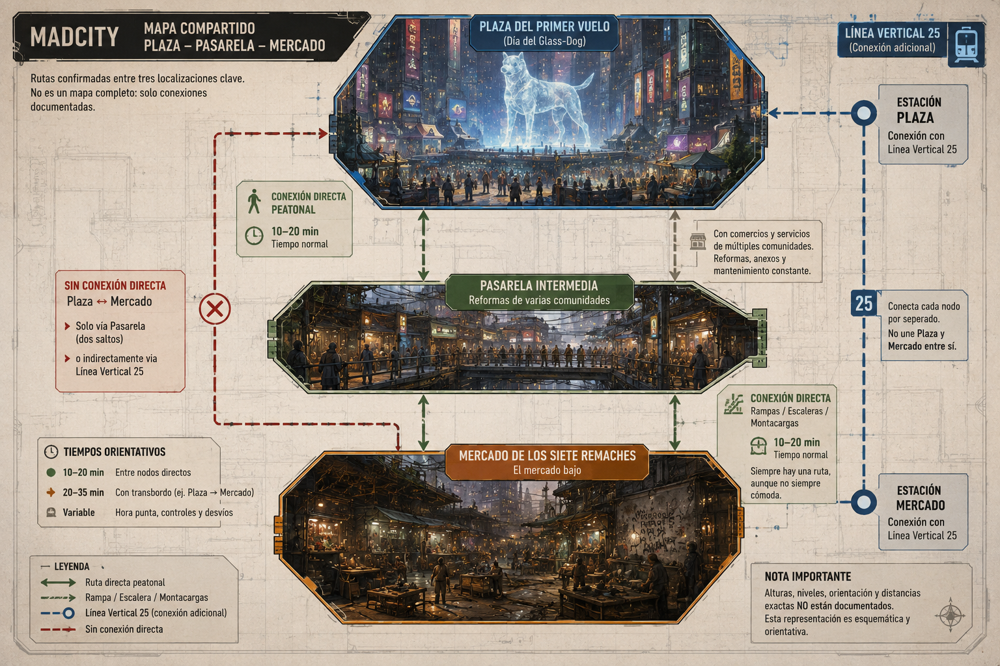

Colección de one-shots de MadCity — episodio 6 de 6. Estado: BORRADOR, pendiente de playtest.
«Entrega garantizada. La necesidad del destinatario se vende por separado.»

Premisa: un módulo regulador universal —una pieza pequeña, cara y muy solicitada— tenía que llegar hoy a tres destinos distintos. Los tres tienen justificante de compra auténtico. Los tres lo necesitan de verdad. Y solo existe una unidad real: un concesionario autorizado de Norton vendió tres veces el mismo número de serie, y pensaba sustituir dos de las tres entregas por piezas reacondicionadas sin certificar antes de que nadie lo notara. Palo Neris, el repartidor, detectó la irregularidad a mitad de ruta. Antes de poder informar, alguien lo presionó — y desapareció con la pieza auténtica escondida en algún punto de su recorrido habitual.
Duración: una sesión de 4-6 horas. Escala local: un nodo de reparto, tres destinos con necesidades reales, un mensajero desaparecido y un fraude que nadie planeó como gran conspiración — solo como ahorro de costes que se les fue de las manos.
Qué saben los PJ: que Norton tiene una entrega crítica sin resolver, que hay tres reclamaciones simultáneas por la misma pieza, y que el repartidor habitual no responde desde hace horas.
Verdad del Narrador: Norton central no ordenó el fraude — es un concesionario concreto, no toda la red. Palo no robó nada: escondió la pieza real precisamente para que nadie la sustituyera sin que se supiera, y ahora está en peligro por ello.
Objetivo inmediato: encontrar a Palo, recuperar la pieza auténtica, y decidir cómo repartir (o sustituir, reparar, adaptar) entre tres necesidades legítimas sin una sola respuesta limpia.
Pregunta de fondo: cuando la logística falla, ¿quién carga con el problema — el que fabricó el fraude, el que lo ejecutó, o el que solo confiaba en que la entrega llegara?
Si nadie interviene: el concesionario entrega piezas reacondicionadas a dos de los tres compradores sin decírselo. Una de las tres necesidades (la mesa decide cuál, según lo que se haya establecido en la Escena 1) queda sin resolver a tiempo, con consecuencias reales pero no necesariamente catastróficas. Palo sigue desaparecido, y nadie más lo busca.
Reloj — tres plazos distintos, no uno solo:
| Tiempo | Qué ocurre |
|---|---|
| H+0:00 | Se descubre que la entrega no llegó a ninguno de los tres destinos. Escena 1 empieza aquí. |
| H+1:30 | La intervención en la Clínica Ibis-Forge necesita el regulador — es el plazo más corto de los tres. |
| H+3:00 | La Galería de Puertas debe cerrar una ruta si no recibe el componente — plazo intermedio. |
| H+5:00 | El componente de Tessa Brom (soporte médico doméstico) tiene el margen más amplio, pero no es infinito. |
| H+3:30 | El concesionario planea completar la sustitución por piezas reacondicionadas si nadie ha intervenido antes de este punto. |
Cómo avanza el tiempo de ficción: no lo simules minuto a minuto — avanza el reloj cuando los PJ cambien de zona de la ciudad, investiguen a fondo, o esperen una respuesta. Los tres plazos no fuerzan una elección mortal inevitable: existen salidas técnicas, económicas o legales que pueden estirar cualquiera de los tres si el grupo las encuentra a tiempo.
Las tres partes, en una frase:
- Bosk Ferran (concesionario) → resolver el fraude en silencio antes de que Norton central se entere del alcance real.
- Los tres compradores → recibir lo que ya pagaron, cada uno con una urgencia distinta y ninguna menos legítima que las otras.
- Palo Neris → sobrevivir y que alguien le crea antes de que le crean a Bosk.
No hay villano de manual. Bosk no planeó un fraude elaborado — vendió de más por presión de ventas y pensó que podría cubrirlo sin que nadie lo notara. Sus agentes siguen órdenes, no una conspiración. La violencia contra Palo fue miedo a ser descubiertos, no un plan premeditado de silenciarlo para siempre.
La logística, en mesa — hazla visible como confianza, no como trazabilidad abstracta: cada tramo de esta entrega pasa por manos concretas — quien firmó la recepción en el Nodo, quien cargó la pieza, quien debía entregarla y no llegó, quien la reclama y por qué. El fraude no es un número de serie duplicado en abstracto: es que alguien, en algún punto de esa cadena, decidió que su margen de beneficio pesaba más que la palabra dada.
Ecos de la colección (opcionales, nunca necesarios): si la mesa ha jugado otros episodios, Lian Orbe y Erea Sal reaparecen aquí como compradoras — reconocibles al instante para quien ya las conoce, perfectamente comprensibles en una primera lectura para quien no. Ningún dato de los módulos anteriores es necesario para seguir este; lo que se sepa de ellas se resume aquí mismo.
Textura de reparto (1d6, para ambientar sin planificar): úsala dos o tres veces a lo largo de las Escenas 1 y 2.
| d6 | Momento |
|---|---|
| 1 | Otro repartidor de Norton pregunta, preocupado, si alguien ha visto a Palo — se conocen de la ruta. |
| 2 | Un cliente ajeno al caso se queja en el mostrador por una entrega tardía completamente distinta. |
| 3 | El sistema automatizado del Nodo felicita, con voz alegre, por "otro día de entregas sin incidencias" mientras todo el mundo sabe que las hay. |
| 4 | Alguien reconoce el número de serie de la pieza de una conversación previa y lo comenta sin saber que es relevante. |
| 5 | Un técnico del Nodo ofrece ayuda genuina, aunque no tiene autoridad para resolver nada por su cuenta. |
| 6 | Bosk practica, en voz baja, cómo va a explicar todo esto si Norton central pregunta. |
Bosk Ferran, responsable de un concesionario autorizado de Norton, vendió el mismo número de serie de un módulo regulador universal a tres compradores distintos — presión de ventas, no intención de estafar desde el principio. Al darse cuenta de que solo tenía una unidad real, planeó sustituir dos de las tres entregas por piezas reacondicionadas sin certificar, confiando en que nadie lo notaría a tiempo.
Palo Neris, encargado del reparto, detectó la irregularidad al comparar el número de serie con el registro del Nodo durante su ruta. Antes de poder informar formalmente, tres agentes de Bosk lo interceptaron y lo presionaron para que entregara la pieza sin hacer preguntas. Palo, asustado pero decidido a no dejar que la sustituyeran sin que quedara constancia, escondió la pieza auténtica en un punto conocido de su ruta habitual y desapareció, herido levemente, antes de que pudieran quitársela.
Norton central no conoce el alcance real del problema — puede convertirse en aliado de los PJ si recibe pruebas sólidas del fraude, no en otro obstáculo.
Pueden llegar a saber todo lo anterior investigando. Lo que no deben poder resolver desde el principio es si Palo actuó por honestidad o por robo — eso se aclara, sin ambigüedad real una vez que se le encuentra, en la Escena 3.
Urgente pero humano — tres necesidades reales compitiendo por una sola pieza, sin que ninguna sea más "correcta" que las otras. El fraude es mezquino, no monstruoso. La resolución debe sentirse como una entrega difícil bien gestionada, no como una tragedia inevitable.
Aspecto: conoce todas las rutas y llega tarde a casi todas; hoy, además, con un corte superficial en el brazo que se ha vendado él mismo con lo que tenía a mano.
PNJ funcional (2-3 profesiones), compartida con el resto de la colección — primera ficha numérica publicada, queda como base.
F30/A45/P40/V40 | PV 15/15/15 | Bld 0 | Callejeo/Rutas 55% | Sigilo 45%
Aspecto: traje de vendedor todavía puesto a estas horas, sonrisa profesional que se le escapa cada vez más a menudo, calculadora mental siempre encendida.
PNJ interpretable (3-4 profesiones). Vendió de más por presión comercial, no por plan criminal.
F20/A30/P40/V35 | PV 12/12/12 | Bld 0 | Social/Ventas 55% | Tecnología (catálogo Norton) 40%
PNJ funcionales (2 profesiones cada uno, fuerza fija — no crece con el número de PJ). Presionaron a Palo por orden de Bosk, sin intención de matarlo; siguen órdenes, no tienen plan propio.
F35/A35/P30/V30 | PV 15/15/15 | Bld 1 | Sin Armas 50% | Daño 6 (no letal por defecto)
Aspecto: bata impecable incluso en mitad del caos, manos firmes, habla con el lenguaje corporativo perfecto justo hasta que algo la sorprende de verdad.
Ficha compartida, ya publicada en Garantía anulada: F20/A35/P55/V50 | PV 12/12/12 | Bld 0 | Medicina 75% | Liderazgo/Gestión clínica 55% | Social 50%.
Aspecto: formal, precisa, uniforme del Magisterio sin una arruga; la llave física de siempre al cuello, protección reforzada en el brazo derecho.
Ficha compartida, ya publicada en El ascensor de los trece minutos y Una licencia para abrir: F20/A30/P55/V60 | PV 11/11/11 | Bld 0 | Camino de Portales 70% | Investigación 55% | Voluntad alta (V60).
Aspecto: ropa sencilla, ojeras de quien lleva noches cuidando a alguien, la mano siempre cerca del dispositivo que la mantiene funcionando.
PNJ funcional (1-2 profesiones), sin ficha de combate relevante.
Ambas ya publicadas con ficha propia en la colección (Ascensor y Glass-Dog, respectivamente). Aparece una u otra, no las dos a la vez, según cómo aborden los PJ el caso:
Si el grupo necesita una solución técnica improvisada (adaptador, reparación temporal), Karel puede aparecer brevemente como recurso — mismo criterio de ficha ya publicada en Glass-Dog y Deuda del mercado bajo. No es necesario para resolver el módulo.
Nodo Norton 61: centro de distribución con tienda, almacén automatizado y mostrador de incidencias. Punto de partida de la investigación.
El concesionario de Bosk Ferran: oficina de ventas, con acceso a los registros de la triple venta.
La ruta habitual de Palo: puede cruzar cualquier zona ya establecida de la colección (Plaza del Primer Vuelo, Pasarela de las Mil Fachadas, Mercado de los Siete Remaches) — el reparto de MadCity conecta literalmente los escenarios de los episodios anteriores, sin que haga falta haberlos jugado para que tenga sentido aquí.

Cada escena está pensada para dirigirse sola, sin buscar en otra parte del documento durante el juego — las fichas relevantes están repetidas dentro.
Atmósfera:
El mostrador de incidencias del Nodo Norton 61 tiene tres personas esperando la misma respuesta y ninguna dispuesta a irse sin ella. En el sistema, la misma entrega figura como "en curso" desde hace demasiadas horas.
Qué está ocurriendo: tres reclamaciones legítimas convergen a la vez sobre la misma entrega, sin que Palo responda.
PNJ presentes, con su intención inmediata:
- Lian, Erea y Tessa, cada una reclamando su pieza con un justificante auténtico — ninguna sabe todavía de las otras dos (fichas: ver Reparto).
- Personal del Nodo, sobrepasado, intentando calmar a los tres compradores sin poder darles una respuesta real.
Qué saben / qué dicen: los tres justificantes son auténticos; el sistema del Nodo marca la entrega como pendiente sin más detalle.
Obstáculos y acontecimientos: usa la Textura de reparto (1d6, arriba) una vez si hace falta llenar el momento.
Tiradas posibles (ninguna obligatoria):
- Social (calmar a los tres compradores y conseguir que compartan sus plazos reales): éxito → obtienes los tres plazos (ver Reloj) directamente, ordenando la urgencia real; fallo → los tres insisten en que el suyo es el más urgente, sin datos claros todavía.
- Investigación o Tecnología (revisar el sistema del Nodo): éxito → confirmas que el mismo número de serie aparece en las tres órdenes — la primera señal clara del fraude; fallo → confirmas el retraso, sin detectar la duplicidad todavía.
Si los PJ no hacen nada: el personal del Nodo deriva el caso a Norton central, con una investigación mucho más lenta y sin la ventaja de un grupo dedicado.
Cómo termina: el grupo entiende que hay tres reclamaciones reales por una sola pieza y decide investigar el origen del problema.
Después: cuánta información y cuántos plazos reales consiguieron aquí condiciona la presión con la que se juega el resto del módulo.
«No es que no me crea que los tres han pagado. Es que solo llegó una pieza.»
Atmósfera:
Registros de venta, firmas digitales, y un número de serie que se repite exactamente donde no debería. En algún punto de esta cadena, alguien decidió que el margen pesaba más que la palabra dada.
Qué está ocurriendo: investigación del Nodo, el concesionario, las firmas y el recorrido de la entrega para confirmar el fraude y localizar a Bosk.
PNJ presentes, con su intención inmediata:
- Bosk Ferran, si se le localiza — evasivo al principio, quiere resolver esto en silencio (Aspecto y ficha: ver Reparto).
- Sira Venn o Juno Arca, según el enfoque elegido por el grupo — aparece aquí o en la Escena 3, coordinando o investigando según su rol (fichas: ver Reparto).
Qué saben / qué dicen: el registro completo confirma la triple venta y apunta directamente a Bosk como responsable del concesionario.
Tiradas posibles:
- Tecnología o Investigación (analizar el registro de ventas y firmas): éxito → confirmas la triple venta y el plan de sustitución por piezas reacondicionadas; fallo → confirmas la irregularidad, sin el detalle completo del plan de Bosk.
- Social o Alerta (presionar a Bosk directamente): éxito → admite, nervioso, la venta múltiple — aunque minimiza lo que les pasó a sus agentes con Palo; fallo → se cierra en explicaciones vagas sobre "un error de inventario".
- Investigación (reconstruir el último recorrido conocido de Palo): éxito → obtienes una pista clara de por dónde empezar a buscarlo; fallo → información parcial, suficiente para seguir pero no para localizarlo con precisión.
Si los PJ no hacen nada: Bosk avanza con su plan de sustitución sin que nadie lo detenga todavía.
Cómo termina: el grupo confirma el fraude y tiene una pista real sobre dónde buscar a Palo.
Después: el nivel de detalle conseguido aquí determina si la Escena 3 empieza con ventaja o con búsqueda a ciegas.
Atmósfera:
La ruta habitual de Palo cruza medio barrio — un atajo aquí, un contacto de confianza allá. En algún punto de ese recorrido, dejó una señal para quien supiera buscarla, y también una venda improvisada de sangre ya seca.
Qué está ocurriendo: el grupo sigue la ruta habitual de Palo para encontrarlo antes que los agentes de Bosk, que también lo buscan.
PNJ presentes, con su intención inmediata:
- Palo Neris, escondido, asustado pero decidido — sale si reconoce que quien lo busca no viene de parte de Bosk (Aspecto y ficha: ver Reparto).
- Yorik Dahl y dos agentes, si Bosk los ha enviado también — buscan recuperar la pieza sin dejar más pruebas del incidente (ficha: ver Reparto).
Qué saben / qué dicen: Palo puede confirmar toda la verdad completa en cuanto se siente a salvo — no sabía de los tres compradores hasta que el grupo se lo cuenta.
Tiradas posibles:
- Callejeo o Investigación (seguir la ruta habitual y las señales dejadas por Palo): éxito → lo localizas directamente; fallo → tardas más, dando tiempo a que los agentes de Bosk se acerquen también.
- Social (convencer a Palo de que pueden ayudarlo en vez de perseguirlo): éxito → confía y entrega la ubicación de la pieza escondida; fallo → duda, exige garantías antes de moverse.
- Combate no letal, solo si los agentes de Bosk llegan también y fuerzan la situación: usa las reglas vigentes — ni Bosk ni sus agentes quieren un segundo incidente, así que escalan solo si se les acorrala sin salida.
Si los PJ no hacen nada: los agentes de Bosk encuentran a Palo primero y recuperan la pieza por la fuerza, dejando el fraude sin pruebas claras.
Cómo termina: el grupo encuentra a Palo (con o sin los agentes también presentes) y consigue, o no, la ubicación de la pieza auténtica.
Después: cómo trataron a Palo aquí condiciona cuánto coopera en la Escena 5, cuando haya que dar testimonio formal.
Atmósfera:
La pieza auténtica, pequeña y sin nada de espectacular a la vista, sobre una mesa cualquiera. Y alrededor, tres necesidades reales que no caben todas en una sola caja.
Qué está ocurriendo: con la pieza recuperada (o sin ella, si se perdió en la Escena 3), el grupo reúne alternativas técnicas, económicas o legales para las tres necesidades.
PNJ presentes, con su intención inmediata:
- Cualquiera de los tres compradores que el grupo decida contactar primero.
- Karel, si el grupo lo busca para una solución técnica improvisada (ficha: ver Reparto) — opcional, no necesario.
Qué saben / qué dicen: existen salidas no limpias pero reales: recuperar piezas reacondicionadas del propio concesionario, reparar temporalmente, acelerar otro envío desde Norton central, fabricar un adaptador, o priorizar por plazo real mientras llega una solución definitiva para las otras dos.
Tiradas posibles:
- Tecnología o Mecánica (fabricar un adaptador o solución temporal para una de las tres necesidades): éxito → resuelves una necesidad sin gastar la pieza auténtica en ella; fallo → la solución no aguanta, hay que usar la pieza real ahí de todos modos.
- Social o Negociación (conseguir que Norton central acelere un envío alternativo): éxito → llega una segunda unidad certificada a tiempo para una de las tres necesidades; fallo → Norton central necesita más pruebas antes de comprometerse.
- Liderazgo (decidir y comunicar la distribución final entre los tres compradores): ninguna tirada sustituye esta decisión — es de la mesa.
Si los PJ no hacen nada: Bosk reparte piezas reacondicionadas a dos de los tres compradores sin decírselo, resolviendo el problema en apariencia pero sin honestidad.
Cómo termina: queda decidido, con o sin soluciones alternativas, quién recibe qué — cualquier combinación es válida, ninguna es la correcta por defecto.
Después: este resultado condiciona directamente el tono de la Escena 5.
Atmósfera:
De vuelta en el Nodo Norton 61, con el papeleo por fin correcto — o por fin honesto, que no siempre es lo mismo. Fuera, la ciudad sigue moviendo diez mil entregas más, ninguna de las cuales sabrá nunca lo cerca que estuvo esta de salir mal.
Qué está ocurriendo: cierre formal del caso — distribución final o provisional, exposición del fraude ante Norton central, y consecuencias para Bosk y los compradores.
PNJ presentes: Bosk, Palo (si sigue dispuesto a colaborar), los tres compradores, Sira o Juno según cuál haya intervenido.
Qué saben / qué dicen: la verdad completa puede presentarse formalmente a Norton central, negociarse con Bosk en privado, o gestionarse de forma incompleta — ninguna opción es automáticamente correcta.
Tiradas posibles: Social o Liderazgo para inclinar la decisión final; ninguna sustituye la decisión de la mesa.
Si los PJ no hacen nada: el caso se cierra tal y como quedó en la Escena 4, sin que Norton central llegue a conocer el alcance real del fraude.
Cómo termina: queda decidido qué le pasa a Bosk, qué recompensa recibe Palo por su honestidad, y cómo queda MadCity para quien vuelva a necesitar una entrega — que la necesitará, porque la ciudad no deja de moverse.
Después: este es el cierre de la colección, no de MadCity — la ciudad sigue teniendo historias por vivir después de esta.
El mostrador de incidencias
El mostrador de incidencias del Nodo Norton 61 tiene tres personas esperando la misma respuesta y ninguna dispuesta a irse sin ella.
Los registros
Registros de venta, firmas digitales, y un número de serie que se repite exactamente donde no debería.
La ruta de Palo
La ruta habitual de Palo cruza medio barrio — un atajo aquí, un contacto de confianza allá. En algún punto de ese recorrido, dejó una señal.
| Fuente | Revela | Vía alternativa |
|---|---|---|
| Sistema del Nodo (Escena 1) | El mismo número de serie en tres órdenes distintas | Calmar a los tres compradores y comparar sus justificantes |
| Registro de ventas del concesionario (Escena 2) | Confirmación de la triple venta y el plan de sustitución | Presionar directamente a Bosk |
| Último recorrido de Palo (Escena 2) | Pista de por dónde empezar a buscarlo | Preguntar a otros repartidores de Norton (Textura de reparto) |
| Encontrar y hablar con Palo (Escena 3) | Verdad completa y ubicación de la pieza auténtica | — |
La misión no debe dejar a los PJ con pérdidas netas por gastos o equipo dañado — cúbrelo antes de repartir nada más.
Recompensa económica: entre 250 y 450 PC por PJ, pagados por Norton central como gestión de incidencia resuelta y prueba de fraude entregada — recompensa profesional real, separada de cualquier gasto propio del encargo, tal y como exige el límite del propio esqueleto.
Beneficios alternativos: relación con Norton central para futuros encargos de reparto o logística; gratitud concreta de quien recibió finalmente la pieza (Lian, Erea o Tessa, según cómo se resolvió); reconocimiento de Palo, gestionable como contacto de confianza en el resto de la colección.
Fraude expuesto completamente. Bosk enfrenta consecuencias reales ante Norton central; los tres compradores conocen la verdad. Norton gana credibilidad a medio plazo, aunque un concesionario concreto quede señalado.
Fraude resuelto en silencio. Se corrige la situación sin escándalo público; Bosk recibe una sanción interna discreta. Menos dramático, más pragmático.
Solución técnica compartida. Gracias a adaptadores, reparaciones temporales o un envío acelerado, las tres necesidades quedan cubiertas sin que nadie se quede sin nada — el desenlace más difícil de conseguir, y el más satisfactorio si se logra.
Una necesidad queda sin resolver a tiempo. Si el grupo no llegó a todo, una de las tres partes (la que la mesa decida, según lo jugado) sufre la consecuencia real de la falta de la pieza — grave pero no necesariamente irreversible, y nunca presentado como fallo de partida.
Palo reconocido. Combinable con cualquiera de los anteriores: su honestidad puede convertirse en ascenso, reconocimiento formal, o simplemente en la certeza tranquila de haber hecho lo correcto.
Este es el cierre de la colección de seis one-shots, no un final de temporada obligatorio: MadCity sigue teniendo entregas, incidencias y necesidades por resolver después de esta, para quien quiera seguir jugando allí.
Voz satírica intervenida sobre un anuncio de reparto:
«Entrega garantizada. La necesidad del destinatario se vende por separado.»
Respuesta estoica en una caja reparada:
«Lo urgente revela el precio. Lo compartido revela el valor.»
Una intervención, no más — ni oráculo ni pista indispensable.
Tres relojes distintos (clínica, portal, soporte médico doméstico) en vez de uno solo, con tiempos de desplazamiento fijados en el Panel del Narrador. Cinco escenas autosuficientes: reclamación triple → investigación del fraude → búsqueda de Palo → reparto de soluciones → cierre formal, cada una con atmósfera, tiradas con éxito/fallo concretos y transición a la siguiente. Ninguna de las tres necesidades es más legítima que las otras. La entrega es pequeña; lo que revela sobre confianza, trazabilidad y quién carga con los errores ajenos, no lo es.
MadCity — colección de one-shots. Comparte lugares, PNJ y dirección visual con el resto de la colección, sin formar una campaña obligatoria. Este es el sexto y último episodio de la colección inicial — la ciudad sigue abierta para más.